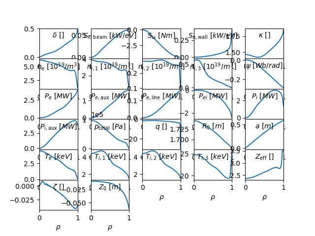

Note
Go to the end to download the full example code
gEQDSK + statefile to input.profiles¶
This example shows how OMAS can be used to generate a GACODE input.profiles file given a gEQDSK file and a ONETWO statefile.
SyntaxWarning: "is not" with a literal. Did you mean "!="? (omfit_gacode.py@243)
0) pow_e_aux += i_vol(qohm[electrons.energy])/1e+06
1) pow_ei -= i_vol(qdelt[electrons.energy])/2e+06
1) pow_ei += i_vol(qdelt[total_ion_energy])/2e+06
2) pow_e_line -= i_vol(qrad[electrons.energy])/1e+06
3) pow_e_aux += i_vol(qione[electrons.energy])/1e+06
4) pow_e_aux += i_vol(qbeame[electrons.energy])/1e+06
7) pow_i_aux += i_vol(qioni[total_ion_energy])/1e+06
8) pow_i_aux += i_vol(qcx[total_ion_energy])/1e+06
9) pow_i_aux += i_vol(qbeami[total_ion_energy])/1e+06
12) flow_wall += i_vol(sion_thermal_e[electrons.particles])/6.24e+21
13) flow_beam += i_vol(sbeame[electrons.particles])/6.24e+21
14) flow_wall += i_vol(srecom_e[electrons.particles])/6.24e+21
16) flow_mom += i_vol(storqueb[momentum_tor])/1
from matplotlib import pyplot
import os
from omas import *
from omfit_classes.omfit_eqdsk import OMFITgeqdsk
from omfit_classes.omfit_onetwo import OMFITstatefile
from omfit_classes.omfit_gacode import OMFITinputprofiles
gfilename = omas_dir + 'samples/g145419.02100' # gEQDSK file
sfilename = omas_dir + 'samples/state145419_02100.nc' # ONETWO statefile
ipfilename = omas_dir + 'samples/input.profiles_145419_02100' # input.profiles generated with PROFILES_GEN
# load OMFIT classes
gEQDSK = OMFITgeqdsk(gfilename)
statefile = OMFITstatefile(sfilename)
ip = OMFITinputprofiles(ipfilename)
# equilibrium ods from gEQDSK (and fluxSurfaces)
ods = gEQDSK.to_omas()
# append core profiles and sources based on ONETWO statefile
ods = statefile.to_omas(ods)
# generate new input.profiles file
ip1 = OMFITinputprofiles(ipfilename).from_omas(ods)
# compare the input.profiles file generated by PROFILES_GEN and the one generated via OMFIT+OMAS
ip.plot()
ip1.plot()
pyplot.show()